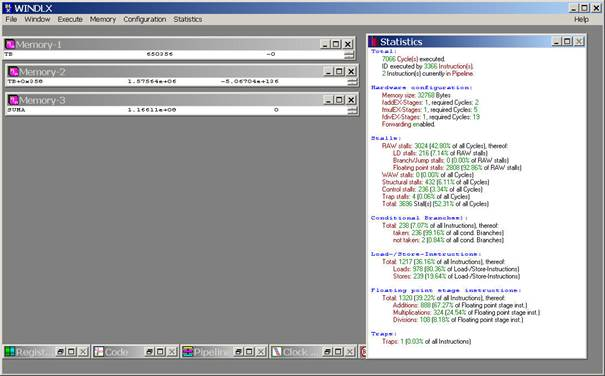

Begin
Dane:
Składnik = 1550,
Ułamek
= 0.55, Rozmiar = 105.
Wzór:
TB[i] = [ (5.2*T[i] * T[i+1]*T[i+6]) - (T[i+2]+ T[i+3]+T[i+4]) ] / [T[i+5] ]
Napisać program Lab8_nr.s w asemblerze komputera DLX, który:
End
Przed zakończeniem zajęć proszę uruchomić program Lab8_nr.s i przygotować okno
WinDLX według wzoru, pokazanego poniżej:
w lewej części okna
a) w pierwszym okienku podglądu zawartości pamięci operacyjnej wyświetlić
zawartość pierwszego elementu tablicy TB
b) w drugim okienku podglądu zawartości pamięci operacyjnej wyświetlić zawartość
ostatniego elementu tablicy TB
c) w trzecim okienku podglądu zawartości pamięci operacyjnej wyświetlić
zawartość zmiennej Suma
w prawej części okna
wyświetlić zawartość okienka Statistics

Na zrzucie ma być widoczny zegar systemowy z aktualną godziną (prawy
dolny róg ekranu Win 11).
Uwaga: symulacja pracy tego programu może trwać kilka minut – pojawia się
dzielenie zmiennoprzecinkowe, jego faza Ex to 19 taktów zegara.
Schemat nazw plików:
AOK_Lab8_WCY24IYgrupaS1_numer_program.s np. AOK_Lab8_WCY24IY9S1_07_program.s
AOK_Lab8_WCY24IYgrupaS1_numer_ekran.jpg np. AOK_Lab8_WCY24IY9S1_07_ekran.jpg
(uwaga, przy plikach graficznych w formacie .png nie zmieniać rozszerzenia
na .jpg)
AOK_Lab8_WCY24IYgrupaS1_numer_arkusz.xlsx np. AOK_Lab8_WCY24IY9S1_07_arkusz.xlsx
dla arkusza, wymaganego na ocenę co najmniej db.
AOK_Lab8_WCY24IYgrupaS1_numer_sprawozdanie.pdf np.
AOK_Lab8_WCY24IY9S1_07_sprawozdanie.pdf
Przed zakończeniem czasu zajęć przesłać na adres
maila o temacie
AOK_Lab8_WCY24IYgrupaS1_numer np.
AOK_Lab8_WCY24IY9S1_07
Bez treści, ale z co najmniej dwoma załącznikami, odpowiednio z plikiem programu
z WinDLX z rozszerzeniem .s i zrzutem ekranu z rozszerzeniem .jpg albo .png, na
przykład:
AOK_Lab8_WCY24IY9S1_07_program.s
AOK_Lab8_WCY24IY9S1_07_ekran.jpg
I o ile zadanie jest wykonane na co najmniej db również arkusz
AOK_Lab8_WCY24IY9S1_07_arkusz.xlsx
Termin nadesłania sprawozdania to koniec trzeciego dnia po dniu przeprowadzenia
zajęć.
Plik sprawozdania tworzymy za pomocą edytora typu MS Office, LibreOffice czy
OpenOffice i zapisujemy na koniec w postaci .pdf.
AOK_Lab8_WCY24IYgrupaS1_numer_sprawozdanie.pdf
np. AOK_Lab8_WCY24IY9S1_07_sprawozdanie.pdf
Wytworzony plik wysyłamy jako załącznik mailem, najlepiej z konta studenckiego w domenie student.wat.edu.pl.
Adres na który należy wysłać maila ze sprawozdaniem
aok.spraw.2011@gmail.com
Temat maila: jak nazwa pliku .pdf ze sprawozdaniem (bez
rozszerzenia),
czyli np.
AOK_Lab8_WCY24IY9S1_07_sprawozdanie
W
sprawozdaniu muszą się znaleźć:
1.
Strona tytułowa z nazwą przedmiotu, tematem zajęć, datą wykonania ćwiczenia,
danymi wykonawcy, deklaracją, na jaką ocenę wykonano zadanie.
2.
Treść zadania z mojej strony (Begin – End).
3.
Treść napisanego przez wykonawcę programu w wersji wysłanej w dniu
przeprowadzenia zajęć (w postaci tekstowej, możliwej do skopiowania z pliku
.pdf) i zrzut ekranu z wynikami programu w wersji wysłanej w dniu
przeprowadzenia zajęć.
4.
O ile zaszła konieczność modyfikacji programu dla uzyskania prawidłowych wyników,
proszę jawnie napisać, że na zajęciach napisany program działał niepoprawnie i
proszę zamieścić nową treść programu i nowy zrzut ekranu według wymagań z dnia zajęć.
5. Wydruk zawartości zmiennej SUMA oraz pierwszych 10 i ostatnich 10 elementów tablic T i TB z podglądu zawartości pamięci operacyjnej WinDLX, potwierdzających poprawne wykonanie prezentowanego programu – nowe okienka, nieobecne na zrzutach ekranu, przysyłanych na koniec zajęć (dla zadania co najmniej na db).
6.
Wydruk zawartości zmiennej SUMA oraz pierwszych 10 i ostatnich 10
elementów tablic T i TB z arkusza kalkulacyjnego (dla zadania co najmniej na db).
Oceny:
·
Brak maila ze zrzutem ekranu po uruchomieniu programu i treścią programu – jako
załącznikami przed końcem czasu zajęć, albo brak sprawozdania w terminie = zero
do średniej.
·
Dotrzymane terminy i warunki, ale program nie działa poprawnie co do sumy
elementów TB w Suma na koniec czasu zajęć = ndst. Trzeba po zajęciach
poprawić program w zakresie do sumy elementów TB w Suma i przysłać w
sprawozdaniu pkt. 1,2,3,4,5,6. Poprawienie programu po czasie zajęć nie zmienia
oceny. Dalej jest ndst. Ale nie zero!
·
Poprawnie działający program dla wyłączonego forwardingu, brak arkusza Excel, na koniec zajęć wysyłane 2
pliki z załącznikami, przy spełnieniu wymagań co do terminów, maili i
załączników = dst.
·
Wszystko w terminie czasu zajęć liczy się i prezentuje dobrze
dla załączonego forwardingu, jest arkusz
Excel, na koniec zajęć wysyłane 3 pliki z załącznikami, przy spełnieniu
wymagań co do terminów, maili i załączników =
db.
Aby uzyskać ocenę bardzo dobrą, należy ponadto w sprawozdaniu zrealizować poniższe punkty A i B:
A.
Proszę zmierzyć liczbę cykli zegarowych dla wykonania uzyskanego programu przy
zmianach w sprzęcie komputera (Menu/ Configuration/ Floating Point Stages -
Count; nie zmieniać wartości parametrów Delay!):
Razem 8 pomiarów. Wyniki pomiarów przedstawić w tabeli, zamieszczając
jednocześnie dla kontroli za każdym razem wartość obliczonej przez program
zmiennej Suma.
B.
Na podstawie wyników pomiarów wybrać taką konfigurację, dla której
dla
poprawnych wyników ilość cykli zegarowych , potrzebnych do wykonania
programu jest
·
Dla każdej z dwóch wybranych konfiguracji należy dołączyć zrzut ekranu,
potwierdzający poprawność wyników TB[1], TB[Rozmiar] i Suma i zawartości okienka
"Statistics" programu WinDLX (liczba instrukcji, liczba cykli, konfiguracja
sprzętowa) jak na koniec zajęć.
·
Zamieścić porównanie diagramów cykli zegarowych dla wykonania jednej iteracji
obliczeń z punktu 3 (obliczanie TB[i]) dla konfiguracji szybka i wolna.
Opisać przynajmniej 2 występujące w tej iteracji hazardy i przyczyny ich powstania.
·
Na podstawie okienka Statistics sprawdzić liczbę
cykli zegarowych, liczbę instrukcji i obliczyć
CPI dla
całego programu dla obu wybranych konfiguracji.
CPI (clock cycles per instruction) = liczba cykli / liczba wykonanych
instrukcji.
https://en.wikipedia.org/wiki/Cycles_per_instruction